Tactus – Handbuch
Schlagzeugnoten im Bandraum mitschreiben, sofort anhören – und zuhause mit dem echten Drum-VST in Cubase weiterarbeiten.
1. Die Idee hinter Tactus
Tactus ist für einen ganz bestimmten Ablauf gebaut:
Der zweite große Vorteil: Tactus versteht Instrumente, nicht Tasten. Deshalb kann es zwischen den Tastenbelegungen verschiedener Drum-VSTs übersetzen – ein Groove, den du für UJAM geschrieben hast, klingt mit einem Klick in EZDrummer richtig (Kapitel 5).
Anders als Guitar Pro – eher wie eine DAW
Wer Guitar Pro kennt, sollte kurz umdenken. Tactus arbeitet wie der Drum-Editor einer DAW, nur dass du dabei echte Noten siehst:
| Guitar Pro | Tactus | |
|---|---|---|
| Noten eingeben | Note für Note mit dem Cursor, Notenwerte selbst passend machen | Einfach ins Raster tippen, wo der Schlag sitzt – Notenwerte, Pausen und Balken ergeben sich von selbst |
| Instrumente | Notenlinie + Kopf | Jede Linie ist ein Instrument, wie eine Zeile im Drum-Editor; auf einer Linie wählst du die Spielweise (Hi-Hat zu / halb / offen …) |
| Lautstärke | Akzent / Ghost | Fünf Anschlagstufen pro Schlag (Ghost · leise · normal · kräftig · Akzent) – wie Velocity |
| Anhören | eingebaute Klänge | Schleife über ausgewählte Takte, bearbeiten während es läuft – jede Änderung ist sofort zu hören; auf Wunsch über dein echtes Drum-VST |
| Zur DAW | MIDI-Export | MIDI mit der Tastenbelegung deines VSTs, dazu die passende Drummap für Cubase, Reaper oder Studio One |
2. Schnellstart im Bandraum
Tactus aufs Tablet holen – einmal, mit Internet
- Die Adresse von Tactus im Browser öffnen (Chrome, Edge oder Safari).
- Als App installieren: Android / Chrome / Edge: Menü → App installieren bzw. Zum Startbildschirm hinzufügen. iPad: Teilen-Knopf → Zum Home-Bildschirm.
- Einmal öffnen, solange Internet da ist. Danach funktioniert Tactus komplett ohne WLAN – im Bandraum ist kein Netz nötig.
- Falls du die aufgenommenen Klänge willst (Kapitel 10): sie einmal online einschalten, dann sind sie auch offline da.
Den ersten Groove schreiben
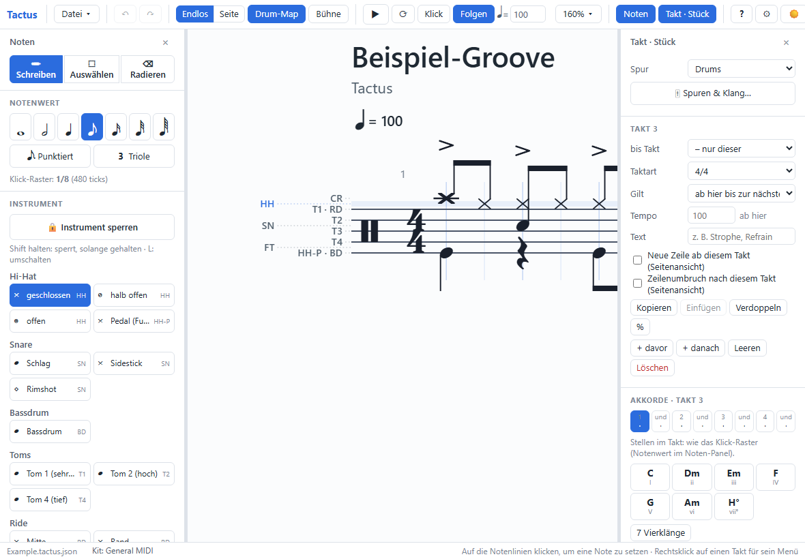
- Datei → Neues Stück. Takt und Tempo stellst du rechts im Panel ein.
- Links den Notenwert wählen, z. B. Achtel. Er bestimmt das Raster, in das deine Schläge einrasten.
- Auf die Hi-Hat-Linie tippen: es erscheint eine Vorschau-Note, beim Loslassen ist sie gesetzt. Für eine ganze Achtelreihe: auf die erste Note tippen, halten, dann seitwärts ziehen (Kapitel 3).
- Snare und Bassdrum genauso. Welche Linie welches Instrument ist, zeigt die Drum-Map (Werkzeugleiste) links an den Linien.
- Anhören: ▶ oder Leertaste. Den Takt antippen und ⟳ (Schleife) einschalten: der Takt läuft immer wieder.
- Live verbessern: während die Schleife läuft, Noten setzen, verschieben, lauter oder leiser machen – du hörst es beim nächsten Durchlauf sofort.
- Takt fertig? Rechts Verdoppeln oder % (wiederholt den Takt davor), Tempo oben in der Werkzeugleiste.
Speichern
Tactus merkt sich das offene Stück automatisch im Gerät. Zum Aufheben: Datei → Speichern (eine Datei .tactus.json)
oder – praktischer für den Weg nach Hause – In Dropbox speichern (Kapitel 11).
Zum Ausprobieren gibt es fertige Beispiele unter Datei → Beispiele: ▶ Groove ▶ Wiederholungen & Häuser ▶ Sprünge
3. Mit Finger und Stift
Tactus ist zuerst für das Tablet gebaut. Alles geht mit dem Finger – mit dem Stift noch genauer.
Die Gesten
| Geste | Wo | Was passiert |
|---|---|---|
| Tippen | auf den Linien | Note setzen. Beim Drücken erscheint eine Vorschau; solange du hältst, kannst du hoch / runter zielen – Loslassen setzt. |
| Tippen | auf eine Note | Note auswählen (zum Ändern im Noten-Panel) bzw. – im Werkzeug Radieren – löschen. |
| Ziehen | eine Note | Verschieben: seitwärts in der Zeit, hoch / runter auf ein anderes Instrument. |
| Halten, dann seitwärts ziehen | eine Note | Notenreihe: z. B. eine ganze Hi-Hat-Achtelreihe in einem Zug. |
| Halten, dann hoch / runter | eine Note | Anschlag: Ghost · leise · normal · kräftig · Akzent. Neben der Note erscheint eine kleine Skala. |
| Halten und loslassen | eine Note | Menü: die anderen Spielweisen der Linie (Hi-Hat zu / halb / offen, Snare / Rimshot / Sidestick …) und der Anschlag. |
| Halten | leere Stelle / neben den Linien | Taktmenü: Takt einfügen, löschen, kopieren, Taktart, Wiederholung, Text, neue Zeile … |
| Tippen | neben den Linien (darüber / darunter) | Takt auswählen (für Panel, Schleife, Kopieren). |
| Ziehen | neben den Linien | Ansicht verschieben. |
| Zwei Finger | überall | Verschieben und zoomen. |
| Stift-Radierer | auf Noten | Das Radierer-Ende eines Stifts löscht immer – antippen oder darüberwischen. |
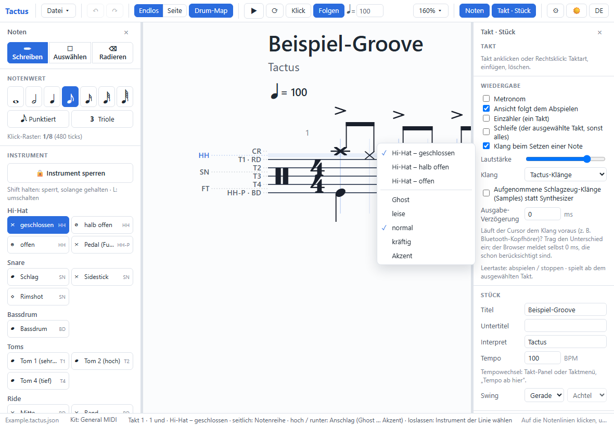
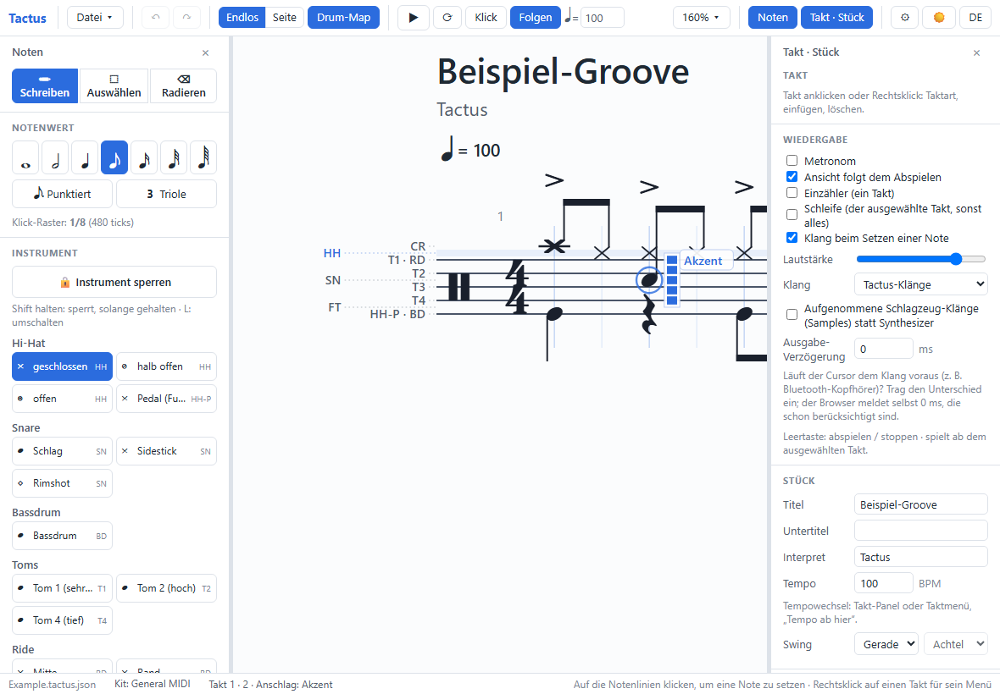
Werkzeuge
Oben im Noten-Panel: ✏ Schreiben (Standard), ⬚ Auswählen (Rahmen aufziehen, mehrere Noten gemeinsam verschieben oder ändern) und ⌫ Radieren (antippen oder über Noten wischen – ein Rückgängig-Schritt).
Tipps für schnelles Mitschreiben
- Instrument sperren (Knopf im Noten-Panel): solange gesperrt, schreibt jeder Tipp das gewählte Instrument, egal wie genau du die Linie triffst – ideal für schnelle Hi-Hat- oder Bassdrum-Figuren.
- Zuerst das Gerüst (Hi-Hat, Snare, Bassdrum), dann mit % oder Verdoppeln weiter – die Feinheiten (Ghost Notes, offene Hi-Hat) kommen danach mit Halten + Menü.
- Takt in die Schleife nehmen und so lange ändern, bis es klingt wie das, was der Drummer spielt.
- Nur mit dem Stift schreiben, mit dem Finger blättern: ⚙ → Ansicht → „Finger setzt Noten“ ausschalten.
- Abschnitte einklappen: Ein Tipp auf die Überschrift eines Abschnitts in den Panels (z. B. Notenwert, Wiederholungen & Sprünge) klappt ihn ein – nur die Überschrift bleibt, das Panel wird kürzer; noch ein Tipp klappt ihn wieder auf. Tactus merkt sich das. Ist eine Note oder ein Zeichen ausgewählt, das ein eingeklappter Abschnitt zeigt, geht er von selbst auf.
- Linkshänder: ⚙ → Ansicht → Linkshändermodus tauscht die beiden Panels.
4. Zuhause: vom Tablet nach Cubase
- Am PC Tactus öffnen und das Stück holen: Datei → Aus Dropbox öffnen… (oder den geteilten Link öffnen).
- Einmalig: ein Kit-Profil für dein Drum-VST anlegen (unten).
- Unten in der Statusleiste auf Kit: … tippen und das Profil für dieses Stück wählen.
- Anhören über das echte VST (unten) – oder direkt MIDI exportieren und in Cubase auf die Schlagzeugspur ziehen.
Kit-Profile – das Prinzip
Jedes Drum-VST legt seine Klänge auf andere Tasten: bei dem einen ist die offene Hi-Hat Taste 46, beim anderen 26. Ein Kit-Profil sagt Tactus, welche Taste deines VSTs welches Instrument ist. Das Notenbild bleibt immer gleich – die Snare steht immer auf derselben Linie, nur die Taste dahinter wechselt je nach Profil.
Öffnen: Datei → Kit-Profile… oder ⚙ → Kit-Profile. Drei Wege zu einem Profil:
| Weg | Wann |
|---|---|
| Neu aus Drummap… | Du hast eine Drummap des Herstellers: Cubase .drm, Reaper-Notennamen .txt oder Studio-One-.pitchlist. Tactus erkennt an den Namen, welche Taste welches Instrument ist – du korrigierst nur, was nicht passt. |
| Neu aus Vorlage… | Für das kostenlose MT Power Drum Kit 2 und alles nach General MIDI (z. B. Groove Agent SE, das bei Cubase dabei ist). |
| Neu ohne Drummap… | Der Hersteller liefert keine Drummap: alle 128 Tasten, General MIDI vorbelegt. In der Ansicht Nach Taste spielst du jede Taste mit ▶ an und wählst das Instrument – wie den Belegungsplan aus dem Handbuch des VSTs abtippen. |
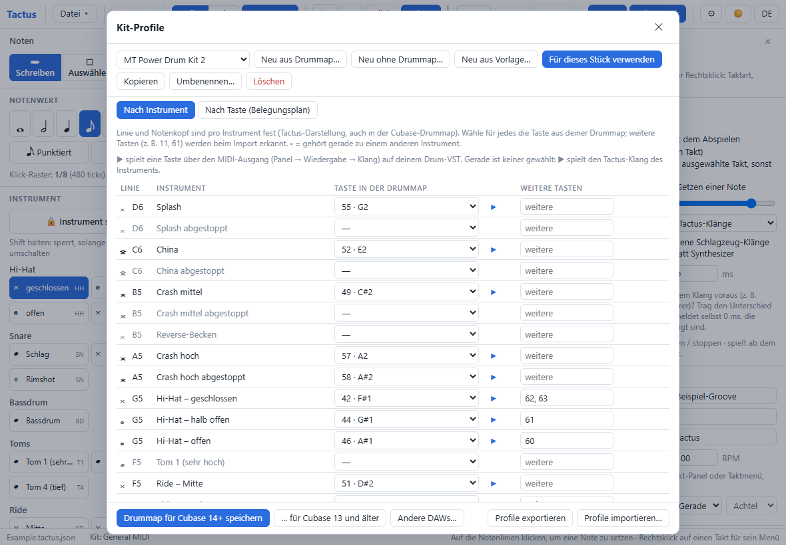
- Weitere Tasten: manche VSTs haben einen Klang auf mehreren Tasten (z. B. Snare auf 38 und 40). Die erste Taste wird beim Export benutzt, alle zählen beim Import.
- Mit Für dieses Stück verwenden gilt das Profil für das offene Stück – es wird mit dem Stück gespeichert.
- Kit-Profile liegen im Browser und – wenn verbunden – automatisch in der Dropbox, also auf allen deinen Geräten.
Was fehlt im Profil?
Hat das VST ein Instrument nicht, das im Stück vorkommt (z. B. keine China), meldet Tactus das beim Wechsel des Profils, und in der Statusleiste steht ein ⚠. Pro fehlendem Instrument wählst du:
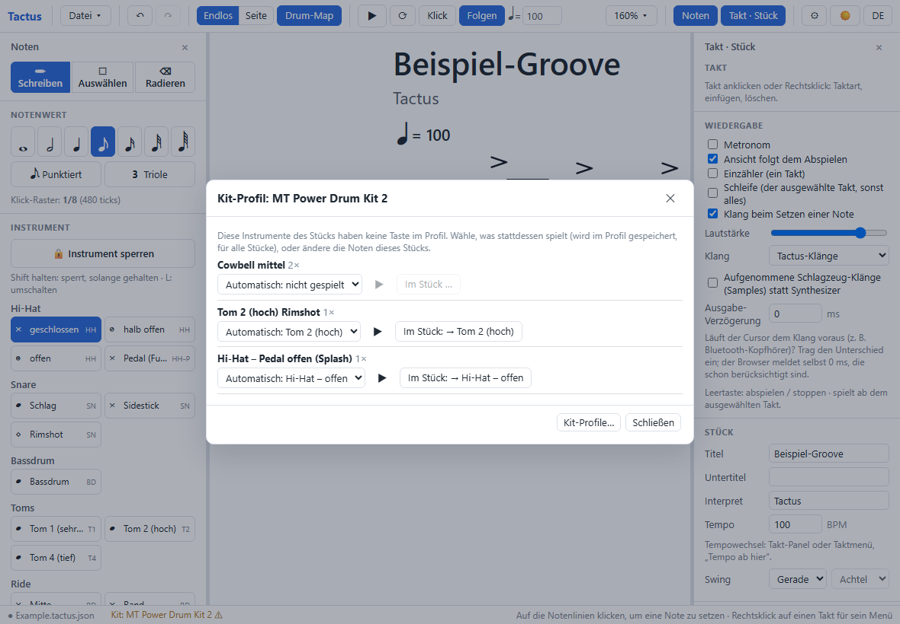
- Automatisch: ein verwandtes Instrument (China → Crash, Tom 5 → nächstes Tom, abgestopptes Becken → Becken).
- Spielen als: ein anderes Instrument des Profils – oder eine freie Taste des VSTs (z. B. ein „FX“-Klang).
- Nicht spielen.
- Im Stück: → … schreibt die Noten selbst um (z. B. alle China-Noten zu Crash) – ein Rückgängig-Schritt.
Die Wahl wird im Profil gespeichert und gilt für Abspielen und MIDI-Export.
Über das echte Drum-VST anhören
Tactus kann die Noten live an Cubase (oder ein Standalone-VST) schicken – dann hörst du dein Stück mit EZDrummer, Groove Agent, UJAM … Das geht in Chrome und Edge am PC.
- Einmalig ein virtuelles MIDI-Kabel einrichten: unter Windows das kostenlose loopMIDI installieren und dort einen Port anlegen (Mac: der eingebaute IAC-Treiber).
- In Cubase: die Schlagzeugspur auf diesen MIDI-Eingang stellen und Monitor einschalten (oder die Aufnahme aktivieren). Ein Standalone-VST stellst du in seinen MIDI-Einstellungen auf den Port.
- In Tactus: Panel Takt · Stück → Spur → Klang, Spielt über → MIDI-Ausgang (Cubase, ein VST)…; beim ersten Mal fragt der Browser um Erlaubnis. Dann den Port wählen. Jede Spur hat ihren eigenen Ausgang – ein VST spielt ein Instrument: z. B. Schlagzeug auf „Drums“ (EZDrummer), Melodie auf „Melodie“ (Falcon). Eine Spur ohne Ausgang klingt mit den Tactus-Klängen. ▶ neben „Spielt über“ schickt sofort einen Testton (Snare bzw. ein C) – so siehst du, ob der Port ankommt.
- Abspielen. Die Tasten kommen aus dem Kit-Profil der Spur, den Kanal stellst du bei der Spur ein.
- Mehrere VSTs über einen Port (wenn ein zweiter loopMIDI-Port nichts empfängt – unter neueren Windows-11-Versionen möglich): alle Spuren auf denselben Port, aber auf verschiedene Kanäle – z. B. Schlagzeug Kanal 10 („Aus dem Kit-Profil (Kanal 10)“), Melodie Kanal 1. Im VST dann nur diesen Kanal hören lassen (EZDrummer: MIDI-Kanal 10 statt „All“, Falcon: Kanal 1), sonst spielt jedes VST die Noten des anderen mit.
- Vorlauf einstellen (Feld unter dem Ausgang): mit Metronom abspielen und erhöhen, bis VST und Klick zusammen sind. Mit ASIO-Treiber sind das wenige Millisekunden, ein Standalone-VST ohne ASIO braucht oft 100–250 ms.
Der Knopf MIDI / Tactus in der Werkzeugleiste schaltet MIDI mit einem Tipp vorübergehend aus (alles mit Tactus-Klängen) und wieder an – die Ausgänge der Spuren bleiben eingestellt. Kommt bei einem Port nichts an, meldet Tactus das; ein loopMIDI-Port, der angelegt wurde, während der Browser lief, geht erst nach einem Neustart des Browsers (alle Fenster schließen).
MIDI nach Cubase
Datei → MIDI exportieren für → das Kit-Profil (oder Strg+E mit dem Profil des Stücks). Die Datei enthält:
- die Tasten deines VSTs, Anschlag (Velocity), Flams / Drags / Wirbel ausgespielt,
- Tempo und Tempowechsel, Taktarten, Takt-Texte als Marker,
- Wiederholungen, %-Takte und Sprünge ausgeschrieben – so wie gespielt (Cubase kennt keine Wiederholungen), mit Markern wie „Takt 5 – 2. Mal“ oder „D.S. – Takt 3“,
- Swing wie gehört – oder gerade (Panel Stück → Swing), wenn du in Cubase swingen willst (wird mit dem Stück gespeichert).
In Cubase: die Datei auf die Schlagzeugspur ziehen. Für Guitar Pro nimm General MIDI (Guitar Pro liest dabei Triolen leider nicht als Triolen).
Mehrere Spuren: Der Export-Dialog zeigt jede Spur. Bei Schlagzeug-Spuren wählst du das Kit-Profil; Melodie-Spuren brauchen keins – ihre Töne gehen mit ihrer Tonhöhe hinaus, dazu ihr Keyswitch-Profil (Spielweisen, „Noten verschieben“, Dynamik über CC / Pitchbend). Der Dialog zeigt bei ihnen, was mitgeht, z. B. „Keyswitches: UJAM Iron 2 · Noten +12“.
Drummap für Cubase, Reaper und Studio One
Damit Cubase dein Schlagzeug genauso notiert wie Tactus: im Kit-Profil Drummap für Cubase 14+ speichern (mit Notenköpfen, Instrumenten und Spielweisen) bzw. … für Cubase 13 und älter (älteres Format, nur Notenköpfe – ältere Versionen kennen keine Spielweisen). In Cubase: MIDI → Drum-Map-Einstellungen → Laden, dann der Spur im Inspector zuweisen.
Andere DAWs… speichert die Tastennamen für den MIDI-Editor von Reaper (.txt, „Load note names from file“) und
Studio One (.pitchlist). Diese Formate kennen nur Namen, keine Notenköpfe.
Der Rückweg: MIDI aus Cubase holen
Datei → MIDI importieren… oder die .mid-Datei einfach auf das Tactus-Fenster ziehen.
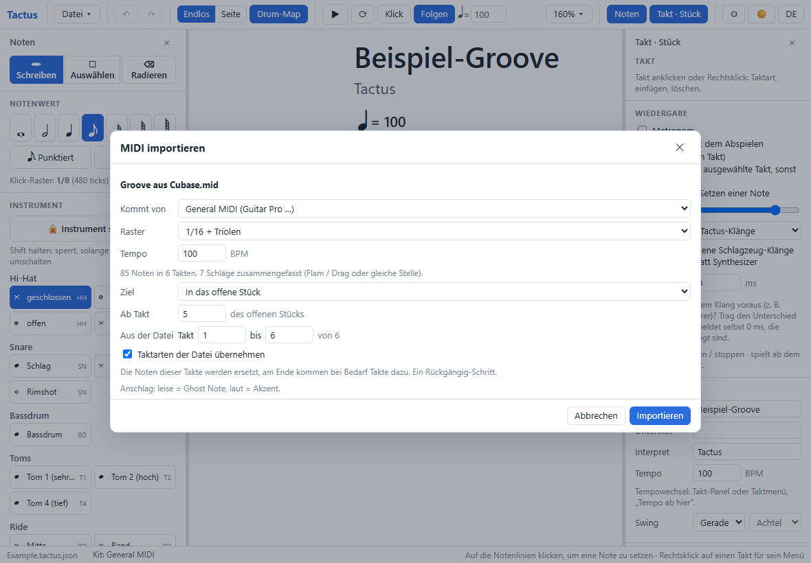
- Spuren: bei einem ganzen Projekt (z. B. ein MIDI-Export aus Guitar Pro) jede Spur mit Noten in einer eigenen Zeile – jede wird eine eigene Tactus-Spur. Spielt eine Spur auf mehreren MIDI-Kanälen (eine Datei, alles in einer Spur), bekommt jeder Kanal seine eigene Zeile. Pro Zeile wählst du Schlagzeug oder Melodie; Tactus schlägt es vor (Kanal 10 / Name = Schlagzeug, Spur mit Klang = Melodie) und merkt sich deine Wahl für den Spurnamen.
- Schlagzeug – Drum-Map: das Profil des VSTs, das die Datei gespielt hat – sonst landen die Tasten auf falschen Instrumenten.
- Melodie – Keyswitch-Profil: hat ein Instrument-VST die Spur gespielt (UJAM Iron, Rowdy, eigene Profile), wähle sein Profil: Seine Keyswitch-Tasten werden wieder zu Spielweisen (P.M., Slides, Staccato …) und Abschlägen statt zu tiefen Noten, die Noten werden zurückverschoben (Iron: eine Oktave) – aber nur, wenn die Datei für dieses VST eingespielt wurde (Export aus Tactus / Cubase: Tactus erkennt es an den Start-Tasten, Häkchen Datei für dieses VST eingespielt). Eine Datei aus Guitar Pro hat jede Note so, wie sie klingt: Häkchen aus, das Profil gilt dann nur fürs Abspielen (sonst würde z. B. das tiefe E eines Basses zu einem Rowdy-Slide). Klang, Kanal, Tonart und Schlüssel kommen aus der Datei – ein Bass bekommt wie in Guitar Pro den Bassschlüssel mit 8 unten (eine Oktave höher notiert, als er klingt). Töne, die zusammen anfangen, werden ein Akkord; was noch klingt, wenn der nächste Ton kommt, wird dort gekürzt (eine Stimme).
- Raster: wie fein Tactus die Schläge einrastet; „1/16 + Triolen“ entscheidet pro Schlag, ob gerade oder triolisch passt.
- Ziel: neues Stück, oder in das offene Stück ab einem Takt – z. B. nur den in Cubase eingespielten Refrain holen.
- Anschlag wird zu den fünf Stufen, leise Schläge kurz vor einem Schlag zu Flam / Drag.
- Wiederholungen automatisch setzen (neues Stück, Häkchen an): eine MIDI-Datei kennt keine Wiederholungen, alles ist ausgeschrieben. Tactus fasst Abschnitte, die direkt danach gleich wiederkommen, zu |: :| 2× (3×, …) zusammen und macht aus Takten, die den Takt davor spielen, %-Takte. Abgespielt klingt alles wie vorher.
Zurück zu den Noten: Rechtsklick auf einen Takt (Finger: halten) → Noten zeigen statt % bzw. Diese Wiederholung ausschreiben. Zum Einfügen bleibt Takt davor wiederholen (%).
Selbst entscheiden: Panel Takt · Stück → Wiederholungen finden → Gleiche Takte markieren färbt die Funde ein – grün / lila die Abschnitte (der erste Durchgang gestrichelt, „2/3“ = zweiter von drei Durchgängen), orange Takte wie der davor („= 5“: wie Takt 5). Die Liste darunter hat je Fund einen Knopf (|: :| 3× bzw. %), dazu Alle als % und Alle setzen. Anschlag nicht beachten findet auch Takte, die sich nur in Ghost / Akzent unterscheiden (eingespielte Dateien). Das geht mit jedem Stück, nicht nur nach einem Import. Abschnitte mit 1./2. Haus erkennt Tactus noch nicht.
5. Drum-VST wechseln mit Tactus
Das Problem kennt jeder: In Cubase ist ein Groove für UJAM geschrieben, jetzt soll er mit EZDrummer laufen – und klingt falsch, weil jedes VST seine Klänge auf anderen Tasten hat. Cubase-Drummaps lassen sich kaum ineinander umrechnen. Tactus kann das, weil es Instrumente kennt statt Tasten:
- In Cubase die Schlagzeugspur als MIDI-Datei exportieren.
- In Tactus MIDI importieren, bei Kommt von das Profil des alten VSTs wählen.
- Unten auf Kit: … tippen und das Profil des neuen VSTs wählen. Fehlt dort etwas, zeigt Tactus es an – Ersatz wählen (oben).
- Optional zur Kontrolle über das neue VST anhören (MIDI-Ausgang).
- MIDI exportieren mit dem neuen Profil und in Cubase auf die Spur mit dem neuen VST ziehen. Dazu im Kit-Profil die Drummap des neuen VSTs für Cubase speichern und der Spur zuweisen.
Weitere Unterschiede zwischen VSTs, auf die du achten solltest: weniger Toms oder Becken (mehrere Noten landen auf demselben Klang), und jedes VST reagiert anders auf Anschlag – Ghost Notes können lauter oder leiser wirken.
6. Noten schreiben im Detail
Notenwerte, Triolen, Punktierung
Der gewählte Notenwert ist das Klick-Raster: in diesem Abstand rasten neue Noten ein. Ein eigenes Raster wählst du darunter bei Klick-Raster (Auto = wie der Notenwert): z. B. Viertel-Akkorde auf jeder Sechzehntel – die Noten bleiben so lang wie der Notenwert, setzen lassen sie sich an jeder Stelle des Rasters. Wie lang eine Note gezeichnet wird, ergibt sich von selbst: sie reicht bis zur nächsten Note, höchstens bis zum Ende ihres Schlags – Pausen und Balken setzt Tactus. Für Triolen 3 Triole einschalten, für punktierte Werte Punktiert. Gerade und triolisch dürfen im selben Takt stehen.
Flam, Drag, Wirbel, Sticking
Note auswählen (antippen), dann im Noten-Panel: Flam / Drag (Vorschläge), Wirbel mit 1–3 Strichen, Sticking R / L unter der Note. Alles wird beim Abspielen und im MIDI-Export ausgespielt.
Mehrere Noten auf einmal
Werkzeug Auswählen: Rahmen ziehen, dann gemeinsam verschieben, Instrument oder Anschlag ändern. Strg+A wählt alle Noten (bzw. die der ausgewählten Takte).
Drum-Kit, Darstellung, Notenhälse
- Drum-Kit (Panel Takt · Stück → Spur → Instrument): welche Instrumente im Noten-Panel und in der Drum-Map angeboten werden – Standard, Groß, Alle, Wie das Kit-Profil (genau die Instrumente deines VSTs) oder eine eigene Auswahl. Jede Schlagzeug-Spur hat ihr eigenes Kit, und es wird mit dem Stück gespeichert – auf jedem Gerät gleich. Eine neue Schlagzeug-Spur übernimmt das Kit der Spur, in die du gerade schreibst.
- ⚙ → Notenbild (dieses Stück) – wird mit dem Stück gespeichert, auf jedem Gerät und im Ausdruck gleich (und lässt sich rückgängig machen):
- Notation: „Tactus“ (Standard; wie die Tactus-Drummap in Cubase) oder „Guitar Pro“. Nur das Bild ändert sich.
- Notenhälse: alle nach oben, Füße nach unten, oder Füße und tiefe Toms nach unten (welche Toms, wählst du darunter).
- Zählzeiten unter den Noten – mit eigenen Silben: für Sechzehntel z. B. „1 e + e“, „1 e + a“ oder „1 ke ti na“, für Triolen „1 tri let“, „1 ka ba“, „1 la li“ … aus der Liste, oder unter Eigene… selbst eintippen (drei Silben für Sechzehntel, zwei für Triolen). Eine Vorschau zeigt, wie gezählt wird.
- Pausenbereinigung (Notenwerte bis zum Schlagende / bis zur nächsten Note): je Schlagzeug-Spur, Panel Spur → Schreiben.
- Ältere Stücke übernehmen beim ersten Öffnen, was auf diesem Gerät eingestellt war.
7. Takte und Form
Ein Takt wird ausgewählt, indem du neben die Linien (darüber oder darunter) tippst. Rechts im Panel stehen dann seine Einstellungen, Halten bzw. Rechtsklick öffnet das Taktmenü.
- Taktart und Balkengruppen (7/8 = 2+2+3 …) gelten ab diesem Takt bis zur nächsten Änderung. Im Panel unter Gilt bzw. im Taktmenü geht die Taktart auch nur für diesen Takt, die Takte danach behalten ihre. Mit „Noten danach rücken nach“ wandert die Musik ab diesem Takt mit: Ein kürzerer Takt zieht sie nach vorn, ein längerer schiebt sie nach hinten. Das hilft z. B. nach einem MIDI-Import ohne Taktwechsel: Ein 2/4-Takt, der in 4/4-Takte geschrieben wurde, wird mit 2/4 + nachrücken wieder richtig. Akkorde rücken mit, Texte und Wiederholungszeichen bleiben an ihren Takten, %-Takte danach werden ausgeschrieben, eine Melodienote über dem neuen Taktstrich wird geteilt und übergebunden.
- Tempo ab hier: Tempowechsel; alle Wechsel stehen im Panel Stück als Liste.
- Text über dem Takt (Intro, Strophe, Refrain …) – erscheint als Marker in Cubase. Diese Texte sind die Teile des Stücks: Teile ▾ in der Kopfzeile (erscheint, sobald es einen gibt), Springe zu im Rechtsklick-Menü eines Takts und ≡ in der Bühnenansicht listen sie auf; ein Klick springt hin – der Takt wird ausgewählt und steht oben links, beim Abspielen geht es dort weiter. Auch angehalten: Teil wählen, und das nächste ▶ beginnt dort (auch wenn das Stück vorher bis zum Ende lief). Ist der Einzähler an, wird nach jedem Sprung neu eingezählt – auch mitten im Abspielen. Mit ⟳ Schleife wird der ganze Teil ausgewählt (bis zum nächsten Teil) und immer wieder gespielt – zum Üben einzelner Abschnitte. In der Bühnenansicht mit Timer: läuft er, geht es ab diesem Takt weiter; angehalten startet das nächste ▶ dort (der Strich zeigt den Takt; blätterst du von Hand um, gilt wieder die Seite).
- Kopieren / Einfügen / Verdoppeln / Leeren / Löschen – auch für mehrere Takte: Shift+Tippen neben die Linien oder bis Takt im Panel. Bei mehreren Spuren kopiert Strg+C den Takt aller Spuren (mit den Akkordsymbolen); nur die Spur, in die du gerade schreibst: Strg+Alt+C, Nur diese Spur kopieren im Panel oder im Taktmenü. Eingefügt wird so ein Takt in die Spur, die beim Einfügen gewählt ist – die anderen Spuren und die Akkordsymbole bleiben. Töne gehen in jede Melodie-Spur (auch eine andere, z. B. Gitarre 1 → Gitarre 2), Schlagzeug nur in eine Schlagzeug-Spur.
- %: der Takt wiederholt den davor (beim Abspielen und Export ausgeschrieben).
- Swing / Shuffle: Panel Stück → Swing, für Achtel oder Sechzehntel.
Wiederholungen und Häuser
Panel Wiederholungen & Sprünge oder Taktmenü Wiederholung & Sprung: |: Anfang, :| Ende (2×, 3× …), Klammern 1. / 2. (Häuser, auch über mehrere Takte). Sind mehrere Takte ausgewählt: Takte a–b wiederholen.
Mehr als zwei Häuser: 1.–2. Haus mit :| 4×, dann ein 3. und ein 4. Haus. Üblich ist ein eigenes :| am Ende des 3. Hauses – fehlt es, setzt Tactus es selbst dazu (gezeichnet, gespielt, im MusicXML): nach einem Haus, auf das noch ein späteres folgt, geht es immer zurück zum |:.
Beim Abspielen zeigt die Statusleiste auch den gespielten Takt (so zählt Cubase). Ausschreiben… macht aus allen Wiederholungen eigene Takte, dann stimmen die Taktnummern 1:1 mit Cubase.
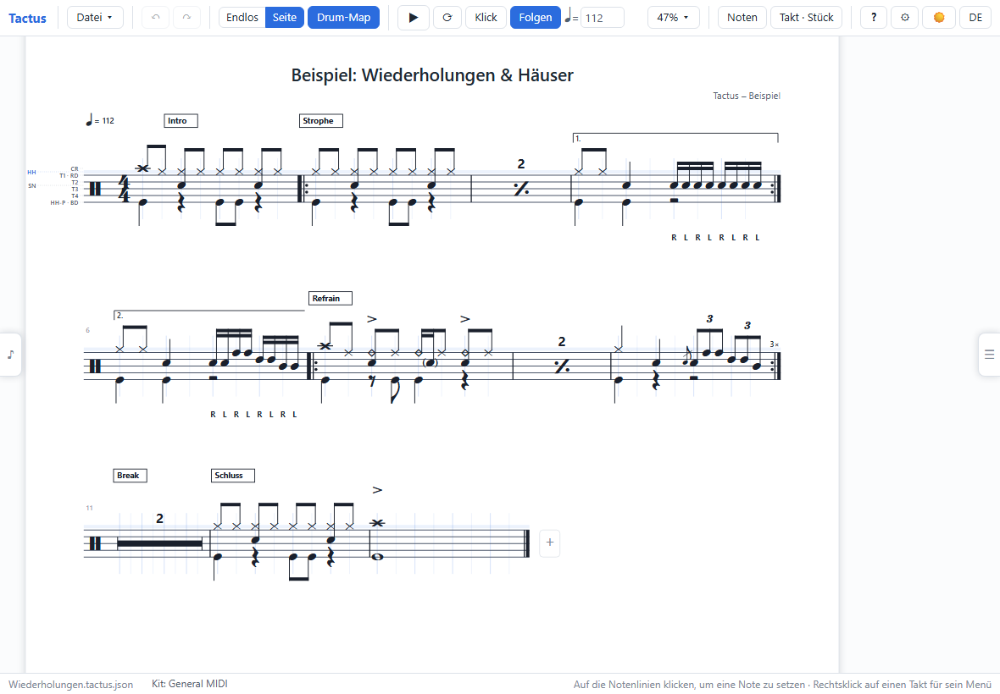
▶ Beispiel im Programm öffnen: Wiederholungen & Häuser – Wiederholung mit 1./2. Haus, %-Takte, ein Refrain, der dreimal gespielt wird, und eine Mehrtaktpause. Abspielen und in der Statusleiste mitlesen, welcher Takt gerade gespielt wird. Auch zu finden unter Datei → Beispiele.
Sprünge: D.C., D.S., Coda, Fine
| Zeichen | Bedeutung |
|---|---|
| D.C. (Da Capo) | zurück zum Anfang |
| D.S. (Dal Segno) | zurück zum Zeichen 𝄋 Segno |
| … al Fine | nach dem Sprung bis zum Takt mit Fine spielen – dort ist Schluss |
| … al Coda | nach dem Sprung bis To Coda, dann weiter beim Takt mit ⊕ Coda (dem Schlussteil) |
Fine und To Coda gelten erst nach dem Sprung – beim ersten Durchlauf spielt man darüber hinweg.
Wiederholungen nach dem Sprung werden nur einmal gespielt, bei Häusern das letzte – so ist es üblich. Steht „con rip.“ in den Noten: Häkchen Wiederholungen nach dem Sprung mitspielen.
Setzen: Takt auswählen → Panel Wiederholungen & Sprünge: Zeichen (am Taktanfang), Am Taktende (Fine, To Coda), Sprung. Fehlt etwas (D.S. ohne Segno …), steht ein Hinweis im Panel. Abspielen, Cursor und MIDI-Export folgen den Sprüngen.
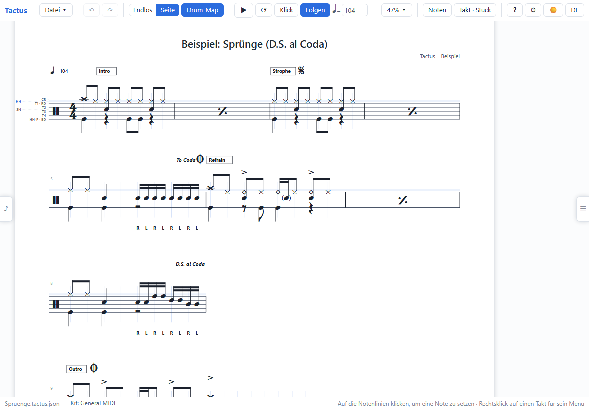
▶ Beispiel im Programm öffnen: Sprünge (D.S. al Coda) – Intro, Strophe ab dem Segno, Refrain, zurück zum Segno, bei „To Coda“ in die Coda. Abspielen und dem Cursor folgen.
8. Melodie schreiben
Beim Songschreiben eine Gesangsmelodie aus dem Kopf festhalten: Tactus kennt die Tonleiter, du tippst nur auf die Linie. Neue Spur: Panel Takt · Stück → Spur → Mischpult… → + Melodie. Sie startet mit Violinschlüssel, C-Dur und einem Stimmen-Klang – einstellen musst du nichts. Wer will, wählt darunter Klang (Gesang, Klavier, Gitarre, Bass, Streicher, Synth …), Stimmlage (setzt den passenden Schlüssel), Schlüssel und Tonleiter.
Töne setzen
- Tippen auf eine Linie oder einen Zwischenraum setzt den Ton der Tonleiter dort – mit den richtigen Vorzeichen. Links neben den Linien stehen die Tonnamen (statt der Drum-Map), beim Zielen klingt der Ton schon.
- Länge: der Notenwert im Panel – oder beim Setzen gedrückt halten und seitlich ziehen: die Note wird länger, ein Balken zeigt wie weit. Über den Taktstrich gezogen entsteht ein Haltebogen. Steht eine Note im Weg, hört sie dort auf (ein kleiner Strich zeigt die Grenze).
- Akkord: an derselben Stelle auf eine zweite Linie tippen.
- Zwei Stimmen in einem System: Panel Noten → Stimme 1 / 2. Stimme 2 hat ihren eigenen Rhythmus, die Hälse zeigen nach unten (Stimme 1 dann nach oben) – z. B. ein liegender Ton (eine ganze Note) unter einer Melodie in Vierteln, ein Orgelpunkt oder eine zweite Stimme im Chor. Eine ausgewählte Note kommt mit demselben Knopf in die andere Stimme. Beide Stimmen klingen und gehen mit in MIDI und MusicXML.
- Zwei Sänger sind zwei Spuren. Ein Klavier (rechte und linke Hand) geht vorerst als zwei Melodie-Spuren mit Violin- und Bassschlüssel.
Ändern
| Geste / Taste | Wirkung |
|---|---|
| Note ziehen | verschieben: seitlich in der Zeit, hoch / runter auf eine andere Linie |
| Note halten, dann hoch / runter | ♯ / ♭ – einen Halbton höher / tiefer, bewusst raus aus der Tonleiter (Esc nimmt es zurück) |
| Note halten, dann seitlich | ihre Länge (auch über den Taktstrich) |
| Note halten und loslassen | Menü: ♯ / ♭, Schreiben als … (Fis ↔ Ges), Haltebogen zur nächsten Note (ein Akkord: alle Töne, die der nächste Akkord auch hat; Nur diesen Ton binden: einer allein, die anderen werden neu angeschlagen; steht eine Pause dazwischen, füllt die Note sie), Anschlag, Löschen |
| ↑ ↓ | nächste Linie (Ton der Tonleiter) |
| Alt+↑ ↓ | Halbton (♯ / ♭) |
| Strg+↑ ↓ | Oktave (auch im Noten-Panel: Oktave höher / tiefer) |
Angebundene Noten gehören zusammen: ♯ / ♭, Oktave, Verschieben und Löschen wirken auf die ganze Kette. Mit dem Auswahl-Werkzeug (V) lassen sich mehrere Melodie-Noten auf einmal verschieben – auch in der Höhe.
Tonleitern
Die Tonleiter bestimmt, welcher Ton auf einer Linie liegt – sie sperrt nichts. Grundton und Tonleiter wählst du im Panel; die Einstellung gilt ab dem ausgewählten Takt (Takt 1: die ganze Spur), so wechselst du mitten im Song die Tonart. Die Noten behalten dabei ihre Tonhöhe.
- Häufig: Dur, Moll, Dur- / Moll-Pentatonik, Blues · Moll-Varianten: harmonisch, melodisch · Kirchentonarten: Dorisch, Phrygisch, Lydisch, Mixolydisch, Lokrisch · Weitere: Dur-Blues, Phrygisch-Dominant, Harmonisch Dur, Lydisch-Dominant, Ungarisch Moll, Doppelt harmonisch, Alteriert, Ganzton, Hirajoshi, In-Sen · Chromatisch (frei). Hinter jedem Namen steht, wie sie klingt.
- Am Zeilenanfang stehen immer die üblichen Vorzeichen (D-Dorisch: keine, wie C-Dur). Was darin fehlt – das Gis in a-Moll harmonisch –, steht direkt an der Note.
- Tonleitern mit weniger als 7 Tönen (Pentatonik, Blues …): die Stellen außerhalb sind blass hinterlegt, setzen aber trotzdem ihren Ton. Die Blue Note im Blues liegt auf derselben Linie wie die Quinte – Note halten und runter.
- ▶ neben der Auswahl spielt die Tonleiter einmal hoch und runter – wählen nach Gehör, ganz ohne Theorie.
- Über den Noten steht die Tonleiter („d-Moll“, „D-Dorisch“, „In-Sen auf D“): in Takt 1 und überall, wo eine Melodiespur die Tonleiter wechselt (mehrere Melodiespuren: mit Spurnamen). Die meisten Tonleitern erkennt man nicht an der Vorzeichnung – so sieht man sie trotzdem, auch im PDF. Abschalten: Panel Seite → Tonleiter über die Noten schreiben.
Akkorde
Akkordsymbole gehören zum ganzen Song: sie stehen einmal über der obersten Notenzeile und gelten für alle Spuren – auch ganz ohne Melodie, nur mit Schlagzeug. Takt antippen (über oder unter den Linien), dann im Panel Takt · Stück → Akkorde:
- Die Knöpfe sind die Stufenakkorde der Tonleiter, die in diesem Takt gilt (C-Dur: C · Dm · Em · F · G · Am · H°), darunter klein die Stufe (I ii iii …). Tippen setzt den Akkord und lässt ihn kurz klingen. 7 Vierklänge macht daraus Cmaj7, Dm7, G7 … Pentatonik & Co. nehmen die Akkorde ihrer 7-Ton-Tonleiter; Akkorde, die nur aus ihren eigenen Tönen bestehen, sind kräftig, die anderen blass. Blues: I7 · IV7 · V7.
- Wo im Takt: die kleinen Knöpfe oben wählen die Stelle – wie das Klick-Raster: bei Vierteln 1 2 3 4, bei Achteln 1 und 2 und …, bei Sechzehnteln 1 e und a … (zwei Reihen). So geht auch ein vorgezogener Akkord auf „4 und“. Ein Akkord gilt bis zum nächsten, auch über viele Takte.
- Eigener Akkord: eintippen, z. B.
C7,Fadd9,G/H,F#m7b5(deutsch:H= H,B= B♭, auchFis,Es). - Aus den Knöpfen gesetzt merkt sich Tactus die Stufe: wechselt die Tonleiter (C-Dur → D-Dur), wird aus Dm automatisch Em. Eingetippte Akkorde bleiben, wie sie sind. Ohne Melodie-Spur wählst du die Tonart direkt im Panel.
- Auch im Taktmenü (rechte Maustaste / Finger halten neben den Linien): Akkord.
- Mitspielen: beim Abspielen klingt ein weicher Akkord-Teppich (abschaltbar; Lautstärke, Pan und Ausgang im Mischpult) – Songschreiben auch ganz ohne Melodie. Standard ist der Tactus-Klang, auch wenn das Schlagzeug über MIDI läuft. Wer ein Synth-VST hat, wählt im Mischpult in der Zeile Akkorde (weiches Pad) unter Spielt über dessen MIDI-Ausgang und einen Kanal (Standard 15) – nicht den Ausgang des Drum-VSTs, das würde die Akkorde als Schläge spielen.
Welche Akkorde kann ich eintippen? (alle Schreibweisen)
Ein Akkord ist Grundton + Art, wahlweise mit /Bass. Grundton: C D E F G A H (deutsch, B = B♭)
bzw. C … B (englisch) mit # / b oder deutsch Cis Fis Es As … Groß- und Kleinschreibung
zählt bei M (Dur-Septime) und m (Moll). Beispiele auf C:
| Akkord | steht als | tippen | Töne (auf C) |
|---|---|---|---|
| Dur | C | C, Cmaj, CM, Cdur | C E G |
| Moll | Cm | Cm, Cmin, Cmi, C-, Cmoll | C E♭ G |
| vermindert | C° | Cdim, C°, Co | C E♭ G♭ |
| übermäßig | C+ | Caug, C+, C#5 | C E G♯ |
| Dur mit ♭5 | C(♭5) | Cb5, C(b5), C-5 | C E G♭ |
| sus2 / sus4 | Csus2 / Csus4 | Csus2, Csus4, Csus | C D G / C F G |
| Powerchord | C5 | C5 | C G |
| Dominant-Septakkord | C7 | C7, Cdom7 | C E G B♭ |
| große Septime | Cmaj7 | Cmaj7, CM7, CΔ, Cj7, Cma7 | C E G H |
| Moll-Sept | Cm7 | Cm7, Cmin7, C-7 | C E♭ G B♭ |
| halbvermindert | Cm7♭5 | Cm7b5, Cø, C-7b5 | C E♭ G♭ B♭ |
| vermindert 7 | C°7 | Cdim7, C°7, Co7 | C E♭ G♭ A |
| Moll mit großer Septime | Cm(maj7) | Cm(maj7), CmM7, C-maj7 | C E♭ G H |
| übermäßig + große / kleine Septime | C+maj7 / C+7 | C+maj7, Cmaj7#5 / C+7, C7#5 | C E G♯ H / B♭ |
| Sept mit ♭5 | C7♭5 / Cmaj7♭5 | C7b5 / Cmaj7b5 | C E G♭ B♭ / H |
| 7sus4 | C7sus4 | C7sus4, C7sus | C F G B♭ |
| Sexte | C6 / Cm6 | C6 / Cm6, C-6 | C E G A / C E♭ G A |
| add9 | Cadd9 / Cmadd9 | Cadd9, Cadd2 / Cmadd9, Cm(add9) | C E G D / C E♭ G D |
| None | C9 / Cmaj9 / Cm9 | C9 / Cmaj9, CΔ9 / Cm9, C-9 | C E G B♭ D … |
| mit anderem Bass | C/E | C/E, Am7/G, G/H | der Ton nach / klingt unten |
Beim Schreiben der Melodie helfen die Akkorde (Panel Takt · Stück → Spur → Schreiben, Zeile Akkorde; jede Melodie-Spur hat ihre eigene Einstellung – z. B. der Bass nur Akkordtöne, der Gesang markiert –, gültig ab dem gewählten Takt, Takt 1: die ganze Spur; ein Wechsel mitten im Stück lässt sich mit Wechsel entfernen wieder wegnehmen):
- Akkordtöne zeigen (Standard): die Töne des gerade klingenden Akkords sind blau hinterlegt, der Grundton (bei Am jedes A) kräftiger; gesetzt wird jeder Ton.
- Nur Akkordtöne: die anderen Linien sind blass, Tippen dort setzt den nächsten Akkordton (gleich weit: beim Ziehen von der Seite, aus der du kommst, sonst der tiefere). Bei E7 in a-Moll setzt die G-Linie das Gis. Bewusst abweichen geht weiter: Note halten, hoch / runter. Auch beim Verschieben bleibt es bei Akkordtönen: hoch / runter gezogen landet die Note auf dem nächsten Akkordton der Stelle, wo sie hinkommt, die Pfeiltasten ↑ ↓ springen von Akkordton zu Akkordton. Nur seitlich verschoben behält sie ihren Ton.
- Akkorde: keine Hilfe: nur die Tonleiter.
Export: MusicXML schreibt die Akkordsymbole (Guitar Pro, MuseScore zeigen sie über der Melodie). Beim MIDI exportieren gibt es eine Zeile Akkorde: eine eigene Datei bzw. MIDI-Spur mit einer Fläche auf Kanal 15 und den Akkordnamen als Text.
Klang und Export: Die Melodie spielt mit dem Tactus-Synthesizer oder über MIDI auf jedem Instrument-VST (Kanal und Klang der Spur). MIDI exportieren und MusicXML nehmen Tonhöhen, Tonart, Schlüssel und Haltebögen mit.
Liedtext
Der Text steht unter den Noten, eine Silbe pro Note. So geht's los: eine Note der Melodie halten → ✎ Liedtext, im Noten-Panel Liedtext → Text schreiben oder Strg+L. Unter der Note öffnet sich ein kleines Feld:
- Leertaste: die Silbe ist fertig, weiter zur nächsten Note.
- - (Bindestrich): das Wort geht weiter – Son-ne tippst du als Son - ne. Zwischen den Silben steht dann ein Strich.
- Leertaste im leeren Feld (oder _): diese Note bekommt keine Silbe, die Silbe davor wird über sie gesungen (Melisma, mit einer Linie darunter).
- Tab / ⇧+Tab, die Pfeile am Textende: Note vor und zurück; ↑ ↓: Strophe darüber / darunter; Enter: fertig.
- Einfügen: Einen ganzen Text (z. B. aus den Notizen) ins Feld einfügen – er verteilt sich auf die Noten, mit - und _ wie oben.
Eine Silbe antippen ändert sie (und tippt von dort weiter). Gebundene Noten bekommen keine eigene Silbe, Text gibt es nur an Stimme 1. Mehrere Strophen: im Panel unter Strophe die Nummer wählen (+ = neue Strophe); sie stehen untereinander, mit „1.“, „2.“ davor. Alles, was in einem Zug getippt wird, ist ein Rückgängig-Schritt.
Export: MusicXML schreibt den Text mit Silbentrennung und Strophen (Guitar Pro, MuseScore). Der MIDI-Export schreibt jede Silbe als Lyric-Ereignis (Karaoke); bei einer Wiederholung kommt im zweiten Durchgang die zweite Strophe.
Ein- und ausblenden: Lange Silben machen die Takte breit. Liedtext anzeigen (Panel unter Liedtext oder unter Seite, Strg+⇧+L) blendet ihn aus – die Takte sind wieder schmal, auch im PDF. Der Text bleibt erhalten und kommt mit in den Export; beim Tippen ist er zu sehen.
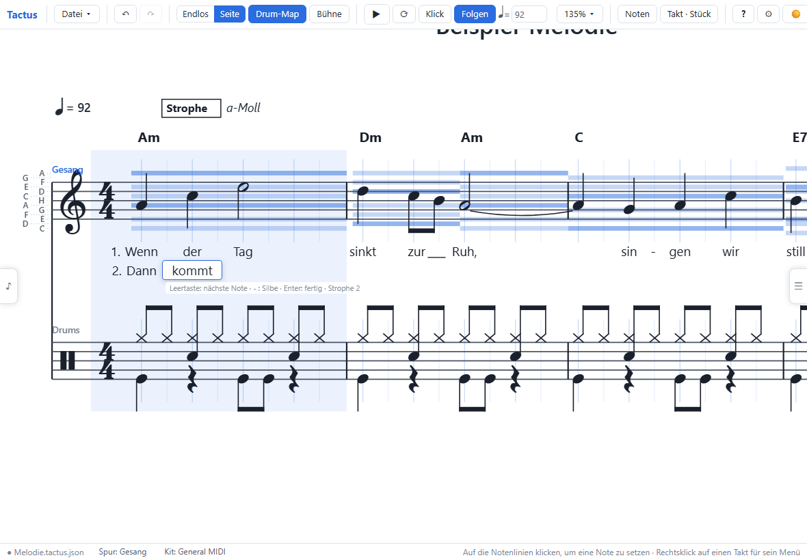
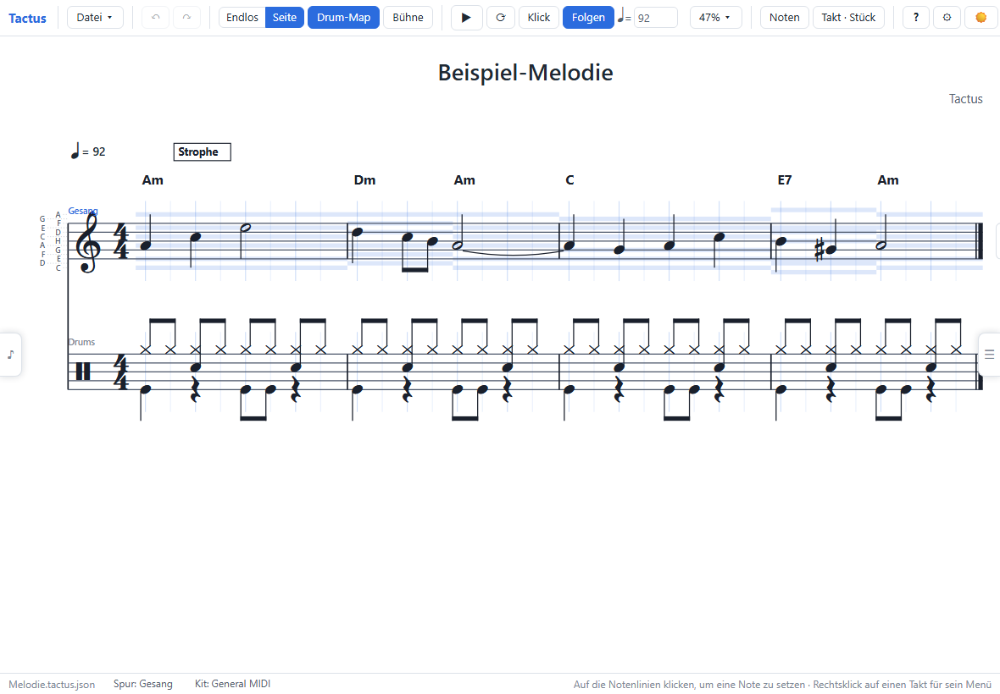
▶ Beispiel im Programm öffnen: Melodie – abspielen, dann selbst eine Note halten und hoch ziehen.
Klavier (zwei Notenzeilen)
Ein Instrument, zwei Notenzeilen: oben die rechte Hand (Violinschlüssel), unten die linke (Bassschlüssel), links eine geschweifte Klammer. Jede Zeile hat ihren eigenen Rhythmus – oben die Melodie, unten Bass und Akkorde, ohne zweite Stimme.
- Neu: Panel Takt · Stück → Spur → Mischpult… → + Klavier. Oder eine Melodie-Spur bekommt Zwei Notenzeilen (Klavier: rechte und linke Hand) – ihre Noten bleiben in der oberen Zeile.
- Schreiben: In die obere Zeile tippen schreibt die rechte Hand, in die untere die linke. Die Statuszeile zeigt „Spur: Klavier (linke Hand)“. Jede Zeile kann wieder zwei Stimmen haben.
- Für beide Hände gilt: Name, Klang, Tonleiter (mit ihren Wechseln), Stumm / Solo, Ausblenden. In der Spurliste steht das Klavier einmal. Den Schlüssel stellst du je Zeile ein (z. B. beide im Violinschlüssel für hohe Begleitung).
- Akkordtöne markieren / sperren wirkt in beiden Zeilen, der Liedtext steht unter der oberen – also zwischen den Zeilen.
- Wieder eine Zeile: den Haken abwählen – die linke Hand verschwindet. Hat sie Noten, fragt Tactus vorher (Rückgängig bringt sie zurück).
- Export: MusicXML schreibt ein Klavier mit zwei Notenzeilen (Guitar Pro, MuseScore), MIDI eine Spur mit beiden Händen.
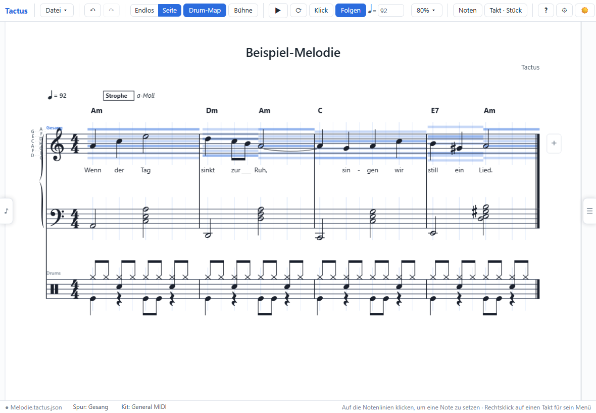
Akkorde wie Noten setzen (Klavier, Gitarre)
Ganze Akkorde setzt du wie Töne: im Noten-Panel links unter Akkorde bei Setzen Akkord wählen (oder gleich ↓ / ↑ für einen Ab- / Aufschlag). Dann setzt ein Tipp in die Notenzeile den Akkord, der dort laut Akkordzeile gilt – mit dem gewählten Notenwert (seitlich ziehen: länger, wie bei Tönen). Welcher Akkord es ist, bestimmst du im Akkord-Panel rechts (Stufenknopf oder eingetippt, siehe Akkorde). Ton schaltet zurück auf einzelne Töne.
- Wie der Akkord aussieht, bestimmt das Instrument der Spur (Panel Spur → Instrument) –
nicht ihr Klang, der ist frei (eine Gitarren-Stimme darf auch mit einem Synth klingen):
- Gitarre: ein echter Griff – voll (alle Saiten ab dem Bass: offene Akkorde, Barré; zum Schlagen) oder eng (4 Saiten) (vier Saiten in der Mitte, jeder Ton einmal; zum Zupfen, für kurze Akkorde).
- Bass: nur ein Ton – der Grundton (bei C/E das E), in der Oktave nah an der angetippten Stelle.
- Streicher / Chor / Bläser: vier Stimmen, weit verteilt – der angetippte Ton ist die oberste.
- Gesang / Melodie, Klavier / Keys, Synth / Fläche: die Akkordtöne eng zusammen, ab dem angetippten Ton aufwärts – höher getippt ergibt eine Umkehrung weiter oben; ein Schrägstrich-Bass (C/E) liegt darunter.
- Töne: wie Symbol (der Akkord der Akkordzeile, wie er ist) · Dreiklang (Grundton, Terz, Quinte – aus C7 wird C E G) · Vierklang (mit Septime: seiner eigenen, sonst der aus der Tonleiter – in C-Dur wird C zu Cmaj7, G zu G7, Dm zu Dm7) · Power (Grundton, Quinte, Oktave – auf der Gitarre auf der E- oder A-Saite, wie gespielt).
- Verschieben und verlängern wie Töne: einen als Akkord gesetzten Akkord ziehen – der ganze Akkord wandert mit (seitlich in der Zeit, hoch / runter in der Tonleiter); halten (Maus: Strg) und seitlich ziehen macht ihn länger. Einzeln gesetzte Töne eines Akkords lassen sich weiter einzeln verschieben.
- Oktave: wie bei Tönen – den Akkord auswählen, 8↑ Oktave hoch / 8↓ Oktave runter (Strg+↑ ↓).
- Anschlag: einen als Akkord gesetzten Akkord halten und nach unten ziehen = Abschlag ↓, nach oben = Aufschlag ↑ (zurück zur Mitte: wie vorher). Oder im Menü (halten / Rechtsklick) ↓ Abschlag · ↑ Aufschlag · – Kein Anschlag, oder bei ausgewähltem Akkord im Panel Anschlag. Ohne Anschlag klingen alle Töne zugleich.
- Ab- und Aufschläge stehen als ⊓ / V über dem Akkord und klingen wie ein echter Anschlag leicht nacheinander (abwärts von tief nach hoch, aufwärts umgekehrt) – auch über MIDI und im MIDI-Export; MusicXML schreibt sie für Guitar Pro / MuseScore mit.
- Ist an der Stelle noch kein Akkord gesetzt, sagt Tactus das und setzt nichts. Eine neue Gitarren-Spur: + Melodie, Klang „Gitarre“ – sie startet in der Tonleiter des Stücks.
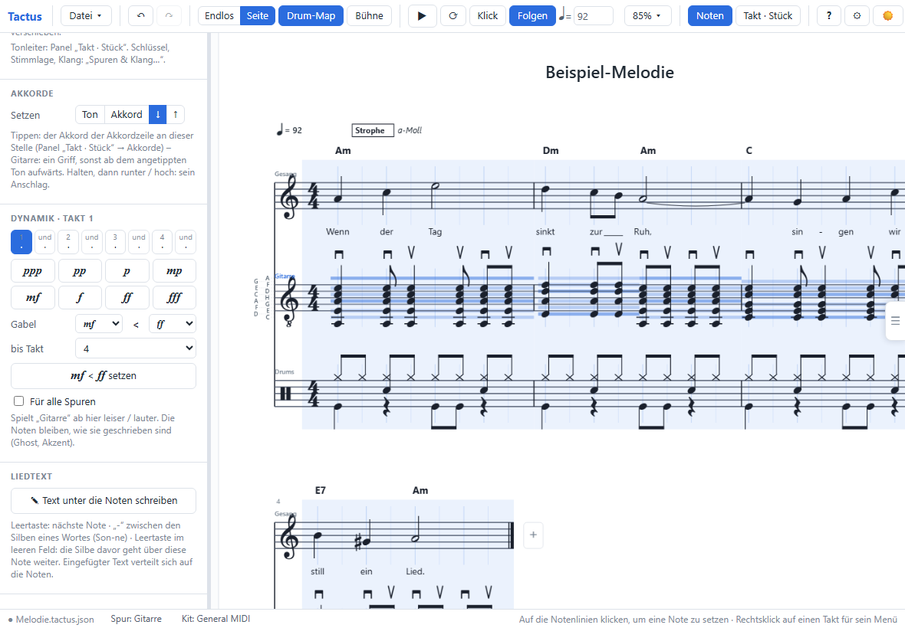
Keyswitches: Spielweisen eines Gitarren-VSTs (UJAM Iron 2 …)
Viele Instrument-VSTs wechseln die Spielweise über sehr tiefe Tasten (Keyswitches): gedämpft, Dead Notes, Slides, Ab- und Aufschlag … Tactus schreibt sie nicht als Noten, sondern als Anweisung unter die Notenzeile (z. B. „P.M. – – – –┘“) und schickt beim Abspielen und im MIDI-Export die richtige Taste kurz vor die Noten.
- Spur mit dem VST (z. B. Instrument Gitarre, Spielt über der MIDI-Ausgang von Iron): im Panel Spur → Klang Keyswitches → UJAM Iron 2 (Instrument Mode).
- Einmal prüfen: Tasten prüfen / ändern aufklappen, bei Muted auf ▶ – in
Iron muss „Muted“ aufleuchten. Liegt alles eine Oktave daneben: oben C3 = MIDI 60 / 48 umschalten. Eine einzelne
falsche Taste lässt sich im Feld daneben ändern (z. B.
F#2). - Spielweisen setzen: Takt antippen, im Noten-Panel links unter Spielweise die Stelle wählen und z. B. P.M.. Dämpfen (let ring, P.M., ½ M., Dead – eine gilt, die nächste löst sie ab) und Picking (Härtegrade, eigene Gruppe – gilt bis zum nächsten Picking): Tactus hält die Taste gedrückt, bis die nächste kommt – das klappt mit Latch an und aus. Vor der Note hier (Slides): gehalten von der Note an der Stelle bis zum Ende der nächsten – so gleitet Iron von der einen zur anderen. Hier (Stop, Release): an der Stelle. Dieselbe noch einmal antippen nimmt sie weg.
- Ab- und Aufschlag (⊓ / V an einem Akkord, siehe oben): mit dem Profil schickt Tactus Irons eigene Tasten Downstroke / Upstroke – Iron schlägt den Akkord selbst an.
- Iron spielt die Gitarre eine Oktave höher als sie klingt und höchstens vier Töne zugleich: Tactus schickt die Noten passend verschoben, angetippte Akkorde werden enge Griffe (4 Saiten). Im Notenbild steht alles, wie es klingt.
- Iron braucht den Trigger Mode (D#1), sonst spielen die Noten nicht: Tactus schickt ihn beim Start unsichtbar mit. Slides, Stop und Release stehen in einer eigenen Reihe unter den Spielweisen.
- UJAM Virtual Bassist Rowdy (Instrument Mode) gibt es ebenfalls als Vorlage: Slides 1–3 (C0–E0, gehalten über die Note – für „Pre-Intros“), Legato an / aus (F#0 / C#0), Dead Notes (A0, B0), Silent Dead Note (G0, schaltet die Tasten auf Dead Notes um und zurück), Full Stop (Bb0). Die Noten gehen eine Oktave höher ans VST (wie bei Iron); passt es bei einem anderen VST nicht, hilft Noten verschieben im Profil anpassen.
- Das Profil wird mit dem Stück gespeichert (auch deine geänderten Tasten). MusicXML schreibt die Spielweisen als Text über die Noten.
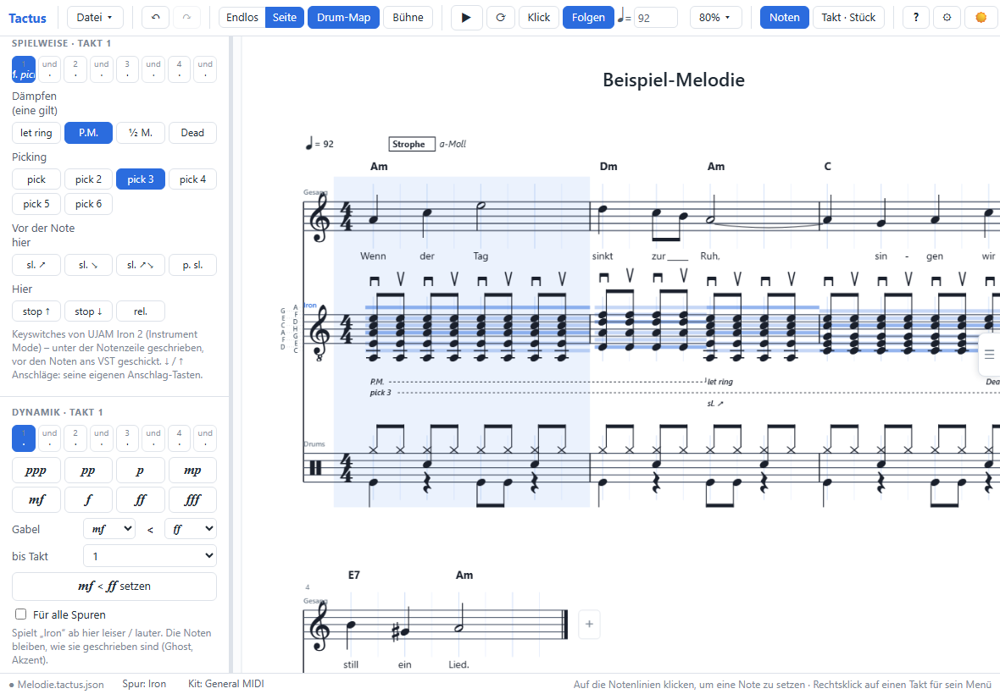
Eigene Keyswitch-Profile (jedes Instrument-VST)
Für ein VST ohne Vorlage – ein anderer UJAM-Gitarrist oder -Bassist, Iconica Sketch, andere Streicher, Bläser … – legst du das Profil selbst an, einmal. Danach steht es an jeder Spur unter Keyswitches → Eigene Profile, in jedem Stück.
Die Spielweisen gibt Tactus vor – wie die Instrumente bei den Kit-Profilen: Sustain (ord.), Legato, Staccato, Spiccato, Tremolo, Pizzicato, Col legno, Con sordino … (Streicher · Bläser · Orchester) und Let ring, P.M., Dead, Picking, Slides, Stopps, Ab- / Aufschlag (Gitarre · Bass). Tactus weiß, wie jede geschrieben wird und wie lange sie gilt; im Profil trägst du nur ein, auf welcher Taste deines VSTs sie liegt.
- Panel Spur → Klang: Keyswitch-Profile… (oder ⚙ Einstellungen → Keyswitches,
wie die Kit-Profile unter Drum-Kit). Dann eins von:
- Expression Map laden… – die Cubase-Expression-Map des VSTs (
.expressionmap): Tactus erkennt jeden Sound-Slot an seinem Namen („Violins2 Staccato“ → Staccato) und übernimmt seine Taste. Was es nicht zuordnen kann (ein unbekannter Name, ein Slot mit Controller oder anderem Kanal), steht danach in einer Liste – dessen Taste trägst du von Hand ein. - Neu, leer… – und die Tasten aus der Tastenübersicht des VSTs eintragen.
- Neu aus Vorlage… – z. B. Rowdy kopieren und für einen anderen Virtual Bassist nur die Tasten anpassen.
- Expression Map laden… – die Cubase-Expression-Map des VSTs (
- In der Tabelle bei jeder Spielweise, die das VST hat, seine Taste eintragen (so wie das VST sie nennt, z. B.
C0,F#1,Bb2) – leer lassen, was es nicht hat. ▶ schickt die Taste zum Prüfen (die Spur, die gerade geschrieben wird, braucht dafür den MIDI-Ausgang des VSTs). Dieselbe Taste doppelt wird angezeigt. - Oben noch C3 =, Noten verschieben und Töne gleichzeitig passend einstellen. Dann Für diese Spur nehmen.
- Im Notenbild: Staccato, Staccatissimo, Tenuto, Portato, Akzent und Marcato stehen als Zeichen an jeder Note, solange sie gelten; Tremolo als drei Striche durch jeden Hals (mit Fähnchen / Balken zusammen). Pizz., col legno, con sord., ord. … stehen als Text unter der Zeile, P.M., Dead und Picking mit gestrichelter Linie bis zur nächsten. MusicXML schreibt die Zeichen als Artikulationen an die Noten.
- Wie lange eine Spielweise gilt: bis zur nächsten ihrer Gruppe (z. B. Staccato bis Sustain oder Legato; con sord. bis senza sord.). Tactus hält die Taste so lange gedrückt – das klappt, ob das VST die Tasten einrastet (Latch) oder nicht.
- Start-Spielweise: Jede Gruppe hat eine (Sustain/ord., senza sord., let ring, Legato aus – „(Start)“ in der Tabelle). Steht vorher nichts anderes, schickt Tactus sie beim Abspielen und im MIDI-Export am Anfang. Nimmst du eine Spielweise aus den Noten, spielt das VST beim nächsten Abspielen also nicht mehr in ihr weiter.
- Dynamik über einen Controller: Folgt die Lautstärke des VSTs dem Modulationsrad (Iconica) oder Expression, oben Dynamik über auf CC 1, CC 11, CC 2 oder Pitchbend (UJAM Virtual Pianist: dort liegt die Stärke) stellen und den Bereich wählen: ppp = und fff = (Vorgabe 20 … 127), die Stufen dazwischen gleichmäßig (mf steht daneben). Dann geht die Dynamik der Noten zusätzlich als dieser Controller raus – beim Abspielen über MIDI und im MIDI-Export: jede Stufe ab ihrer Stelle, ein cresc. / dim. gleitet in kleinen Schritten zur Zielstufe, am Anfang immer der Wert, der dort gilt. Die Anschlagstärke folgt der Dynamik weiter wie bisher. Ein Profil darf auch nur die Dynamik haben, ohne Tasten.
- Schalter dieses VSTs (z. B. Irons Trigger Mode) kommen nicht in die Noten: Name und Taste frei, mit am Anfang schickt Tactus ihn beim Start unsichtbar.
- Schon an einer Spur Tasten korrigiert? Als eigenes Profil speichern… (Panel Spur → Klang) macht daraus ein Profil – für andere Spuren und Songs.
- Änderst du ein eigenes Profil, übernehmen die Spuren des offenen Stücks, die es benutzen, die Änderung beim Schließen des Dialogs (rückgängig machbar). Jede Spur hat eine Kopie im Stück: Auf einem Rechner ohne das Profil spielt das Stück trotzdem richtig.
- Mit Dropbox verbunden, liegen die Profile im App-Ordner von Tactus unter
Keyswitch-Profileund sind auf allen Geräten da – wie die Kit-Profile. Ohne Dropbox: Profile exportieren / importieren (oder nur Dieses exportieren, um eins weiterzugeben).
9. Notenblatt und PDF
Seite in der Werkzeugleiste zeigt A4-Seiten wie gedruckt; schreiben geht dort genauso. Drucken oder PDF: Datei → PDF / Drucken (Strg+P), als Drucker „Als PDF speichern“.
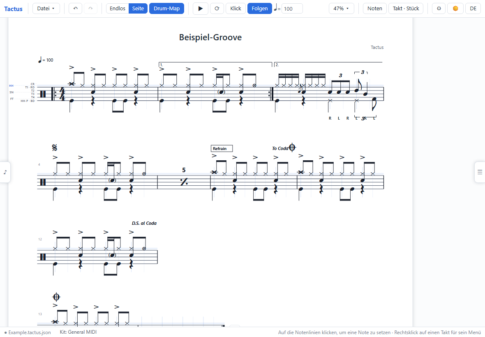
Einstellungen unter ⚙ → Seite:
- Takte pro Zeile (automatisch oder fest), neue Zeile ab einem Takt über das Taktmenü.
- Taktnummern, Seitenränder, Titel und Seitenzahl auf den Folgeseiten.
- Leere Takte zusammenfassen: mehrere Pausentakte werden ein Balken mit Anzahl (Mehrtaktpause).
- %-Takte: jeder einzeln, schmal und durchgezählt (2, 3, 4 … – üblich in Schlagzeug-Charts) oder zusammengefasst zu einem % mit Anzahl – das kompakteste für ein volles Notenblatt.
10. Wiedergabe und Klang
- ▶ / Leertaste spielt ab dem ausgewählten Takt; sind mehrere Takte ausgewählt, genau diese.
- ⟳ Schleife: die ausgewählten Takte immer wieder. Läuft das Stück ohne Schleife bis zum Ende, beginnt der nächste Start bei Takt 1.
- Während des Abspielens bearbeiten: jede Änderung ist sofort zu hören – so findest du den Groove am schnellsten.
- Abspielen & Üben – das kleine ▾ neben ▶ in der Kopfzeile: Klick (Metronom) an / aus und seine Lautstärke (unabhängig vom Lautstärkeregler, ganz links = stumm), Einzähler (ein Takt, nach jedem Sprung erneut), Schleife, Folgen mit seiner Art und die Teile zum Hinspringen. Der Klick lässt sich auch während des Abspielens an- und ausschalten. Klick, ⟳ und Folgen stehen zusätzlich direkt in der Kopfzeile. Folgen aus: die Ansicht bleibt stehen, damit du beim Hören an einer anderen Stelle ändern kannst. Bei einem Teil (Text über dem Takt): diesen Takt oben links ausrichten (▾ neben ▶, unter Folgen): Erreicht der Cursor einen Teil (Strophe, Refrain …), springt die Ansicht so, dass dessen erster Takt oben links steht – ein Teil wird so selten auf zwei Bildschirm-Ausschnitte verteilt. Bis zum nächsten Teil bewegt sich die Ansicht dann nur, wenn der Cursor sie verlassen würde – bei Flüssig gleitet sie dorthin, sonst springt sie.
- Üben mit Umblättern per Timer (⚙ → Umblättern → Automatisch: „Per Timer“): In der Bühnenansicht startet ▶ oben rechts (oder die Leertaste) einen Timer auf der gezeigten Seite. Er blättert im Tempo des Stücks um, mit Wiederholungen, Sprüngen und Tempowechseln, wie gespielt, und so viele Takte vorher wie bei Umblättern eingestellt. Dazu kommt auf Wunsch der Klick: ♩ in der Bühnenleiste schaltet ihn an / aus, stellt seine Lautstärke und den Einzähler ein – es sind dieselben wie für ▶ (♩ leuchtet, solange es klickt); sonst spielt Tactus nichts. Der gerade gespielte Takt ist leicht hervorgehoben, ein Strich steht an seinem Anfang – so siehst du immer, wo ihr seid (abschaltbar: Zeigen, wo wir sind). Blätterst du von Hand um, macht der Timer am Anfang dieser Seite weiter. ■ hält ihn an, Esc beendet die Bühnenansicht. Für Backing-Tracks auf der Bühne bleibt „Per MIDI“.
- Bildschirm an (Mischpult → Wiedergabe, auf Tablet und Handy): Der Bildschirm geht beim Abspielen und in der Bühnenansicht nicht aus, auf Wunsch auch die ganze Zeit, solange Tactus offen ist. Das geht nur in der Online-Version (bzw. der installierten App), nicht aus einer Datei. Der Browser gibt die Sperre frei, wenn du zu einer anderen App wechselst, und Tactus holt sie zurück, wenn du wiederkommst.
- Klang: Tactus-Synthesizer, aufgenommene Schlagzeug-Klänge (Mischpult → Wiedergabe, einmalig ca. 3,5 MB) oder dein Drum-VST über MIDI (Kapitel 4).
Dynamik (ppp … fff) und Lautstärke der Spuren
Dynamik sagt, wie stark ab einer Stelle gespielt wird. Die Noten sind die Hilfe für die Stelle: eine Note antippen, dann im Abschnitt Dynamik eine Stufe ppp pp p mp mf f ff fff – sie steht an dieser Note (im Noten-Panel links; ohne markierte Note am Anfang des gewählten Takts). Das Zeichen bleibt an seiner Stelle im Takt, auch wenn du die Note später verschiebst. Ohne Angabe spielt alles mf – wie bisher.
- Gabeln (wie in Noten: pp < ff): ihre Noten markieren – die erste antippen, dann mit Shift die Zielnote (oder mit dem Auswahl-Werkzeug einrahmen). Im Panel von welcher Stufe, bis zu welcher, und ob die Gabel bis Anfang der Zielnote geht (die Zielnote hat schon die neue Stufe) oder bis Ende der Zielnote (sie schwillt noch mit an), dann pp < ff setzen. Eine einzelne markierte Note: die Gabel über diese Note. Lauter wird ein Crescendo (<), leiser ein Diminuendo (>). Vor der Gabel ändert sich nichts. Von ist zuerst die Stufe, die an der Stelle schon gilt – dann geht die Gabel einfach von dort aus, ohne neues Zeichen; eine andere Stufe steht am Anfang der Gabel. In der Gabel wird es allmählich lauter / leiser, danach gilt die Zielstufe (sie steht am Ende der Gabel), bis die nächste Angabe kommt.
- Ändern: ein Zeichen oder eine Gabel im Notenbild antippen – es wird farbig, oben im Noten-Panel steht, was es ist: eine andere Stufe, bei einer Gabel von / bis und Anfang / Ende der Zielnote, oder Entfernen. Mit dem Radierer angetippt, ist es gleich weg.
- Verschieben: eine ausgewählte Gabel hat vorne und hinten einen runden Anfasser – ziehen, und Anfang bzw. Ende rasten an der nächsten Note, Pause oder am Taktende ein (eine gestrichelte Linie zeigt die Stelle). Ein Zeichen am Anfang der Gabel wandert mit; das Ende bleibt hinter dem Anfang. Ein ausgewähltes Zeichen (p, f …) ziehst du direkt am Zeichen, das Zielzeichen einer Gabel verschiebt ihr Ende.
- Für eine Spur oder alle: normal gilt die Angabe für die Spur, in die du schreibst (beim Klavier für beide Hände); Für alle Spuren setzt sie überall auf einmal.
- Die Noten bleiben, wie sie sind: Ghost-Note, Akzent und Anschlagsstufe ändern sich nicht – die Dynamik spielt sie nur leiser oder lauter (ein Akzent in p ist leiser als einer in f, eine Ghost-Note bleibt eine Ghost-Note).
- Sie klingt mit den Tactus-Klängen und über MIDI (Anschlagstärke); MusicXML schreibt p, f … und die Gabeln. Dieselbe Stufe noch einmal antippen nimmt sie wieder weg.
Lautstärke und Pan: Das Mischpult (Panel Spur → Mischpult…) zeigt alle Spuren untereinander, jede mit Lautstärke, Pan (links / rechts, Doppelklick: Mitte), M / S und wohin sie spielt; das Akkord-Pad hat dort eine eigene Zeile. Für die Spur, in die du schreibst, stehen Lautstärke und Pan auch im Panel Spur → Klang. Die Lautstärke wirkt wie ein Fader am Mischpult. Mit Tactus-Klängen wird die Spur leiser / lauter. Über MIDI: eine Melodie-Spur bekommt die Kanal-Lautstärke (CC 7, ihr Klang bleibt), eine Schlagzeug-Spur schwächere Anschläge – Drum-VSTs wie EZDrummer überhören CC 7. Pan: Tactus-Klänge kommen links / rechts aus dem Lautsprecher; über MIDI bekommt eine Melodie-Spur (und das Pad) den Pan-Regler CC 10, auch im MIDI-Export. Ein Drum-VST verteilt seine Instrumente selbst im Stereobild.
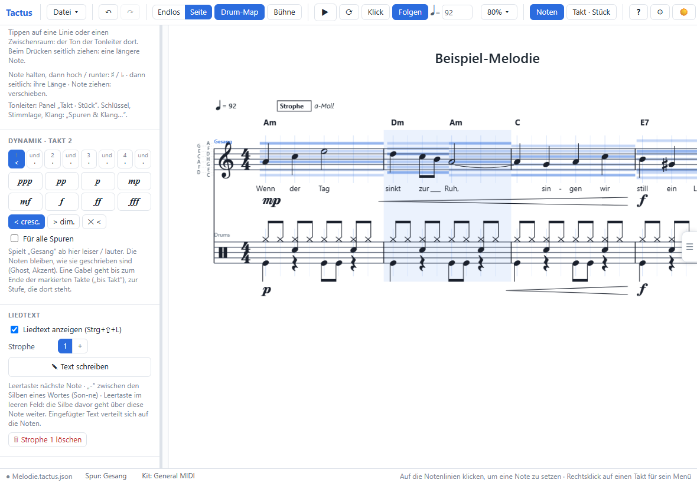
Verzögerung ausgleichen
Bluetooth-Kopfhörer und manche Soundkarten spielen den Ton hörbar später, als der Cursor läuft. Feld Ausgabe-Verzögerung im Panel: den Unterschied eintragen (darunter steht, wie viel der Browser selbst meldet – das ist schon eingerechnet). Der Cursor wartet dann auf den Klang. Für das Drum-VST über MIDI gibt es zusätzlich den Vorlauf. Reihenfolge: erst mit Tactus-Klängen die Ausgabe-Verzögerung, dann mit MIDI den Vorlauf einstellen.
11. Speichern und Teilen
- Automatisch: das offene Stück bleibt im Browser gespeichert, auch nach dem Schließen.
- Datei → Speichern / Speichern unter…: eine Datei
.tactus.json; Öffnen… lädt sie wieder. - Dropbox: Datei → Mit Dropbox verbinden… (einmal anmelden; Tactus sieht nur seinen eigenen App-Ordner). Dann In Dropbox speichern / Aus Dropbox öffnen…; Strg+S speichert ein Dropbox-Stück dorthin zurück. Wurde es inzwischen auf einem anderen Gerät geändert, fragt Tactus nach. Kit-Profile werden automatisch abgeglichen.
- Link teilen: Datei → Link zum Teilen kopieren – das ganze Stück steckt in der Adresse, kein Server nötig. Wer den Link öffnet, bekommt das Stück.
12. Nachschlagen
Welche Linie ist was?
Die Darstellung „Tactus“ (Standard). Die Liste kommt direkt aus dem Programm und ist damit immer aktuell.
| Wird geladen … |
Gesten und Tastenkürzel
13. Häufige Fragen
Auf dem iPad gibt es keinen MIDI-Ausgang.
Richtig – Safari kann kein Web MIDI. Deshalb der Ablauf: im Bandraum schreiben (mit Tactus-Klängen), zuhause am PC mit Chrome oder Edge über das VST anhören und exportieren.
Der MIDI-Ausgang erscheint nicht.
Nur Chrome und Edge; die Erlaubnis beim ersten Mal bestätigen; loopMIDI muss laufen (der Port muss angelegt sein). Danach MIDI-Ausgänge erneut suchen….
Das VST klingt später als der Klick.
Vorlauf erhöhen (Kapitel 4). Ein ASIO-Treiber senkt die Verzögerung deutlich.
Der Cursor läuft dem Klang voraus.
Ausgabe-Verzögerung einstellen (Kapitel 10).
Meine Bandkollegen haben Cubase 13.
Im Kit-Profil … für Cubase 13 und älter speichern. Die MIDI-Dateien sind für alle Versionen gleich.
Nach dem Import stehen Noten auf falschen Linien.
Bei Kommt von das Profil des VSTs wählen, mit dem die Datei gespielt wurde. Tasten ohne Instrument zeigt der Import-Dialog an.
Welcher Browser?
Chrome oder Edge am PC (alles inklusive MIDI-Ausgang), auf dem Tablet Chrome oder Safari. Tactus braucht keine Installation, kann aber als App installiert werden.
14. Lizenzen und Dank
- Notenschrift Bravura © Steinberg Media Technologies GmbH, SIL Open Font License 1.1.
- Schlagzeug-Aufnahmen: MuldjordKit von Lars Muldjord (FreePats-Version), CC BY 4.0, und Virtuosity Drums von Versilian Studios, CC0.
- Linien und Noten der Schlagzeuginstrumente wie in Guitar Pro 7/8, übernommen aus dem Open-Source-Projekt alphaTab.
- Tactus selbst: PolyForm Noncommercial 1.0.0 – frei für jede nicht-kommerzielle Nutzung.